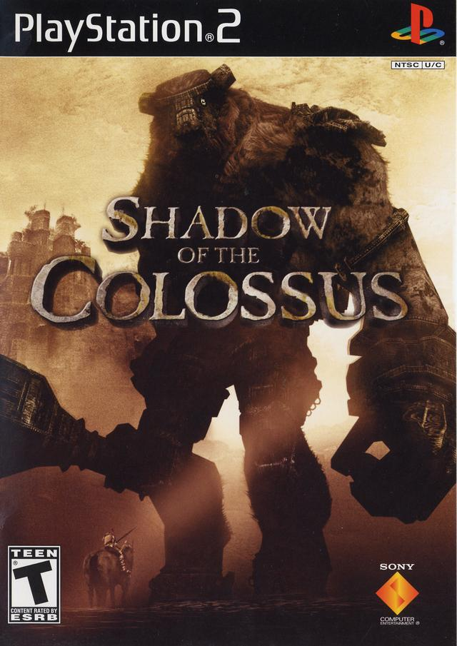
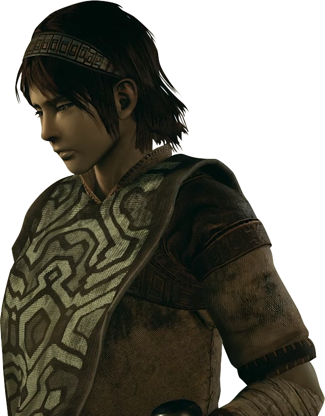
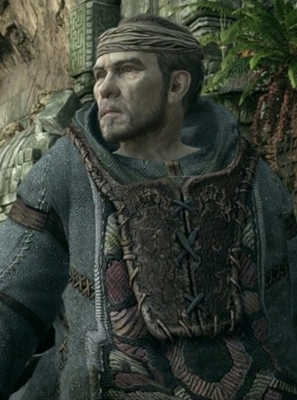
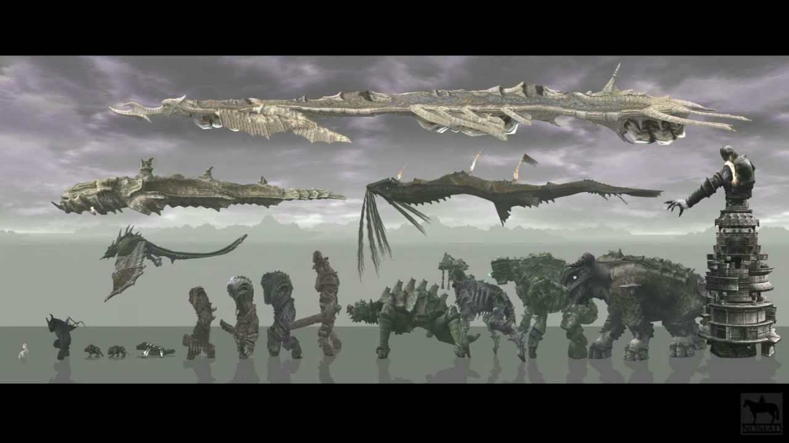

Shadow of The Colossus
Argumento
El juego trata de un joven conocido únicamente como Wander (del inglés wanderer, ‘vagabundo’), que debe viajar a caballo a través de un vasto territorio y derrotar a 16 gigantes, conocidos colectivamente como «Colossi» («colosos» en español) para devolver la vida a una joven llamada Mono. El juego es inusual entre los videojuegos de acción-aventura por el hecho de que no hay pueblos o calabozos para explorar, no hay personajes con los que interactuar y no hay otros enemigos a los que enfrentarse aparte de los colosos. Shadow of the Colossus ha sido descrito como un juego de rompecabezas, ya que hay que descubrir y explotar la debilidad de cada coloso antes de poder derrotarlo.
Personajes
-

Wander
El protagonista es conocido como Wander, un joven cuyo objetivo es revivir a una muchacha llamada Mono. Lo poco que se sabe de Mono es que fue víctima de alguna especie de sacrificio porque se creía que tenía un destino maldito. Ayudando a Wander en su búsqueda se encuentra su fiel caballo Agro, su único aliado para derrotar a los colosos. Wander también recibe ayuda de una entidad llamada Dormin. La historia gira en torno a esos personajes, pero además incluye pocos personajes de apoyo, entre los cuales se encuentra Lord Emon.
-
Dormin
No hay imagen de esto, ya que no aparece como tal.Es una entidad misteriosa e incorpórea conformada por varios seres que residen en el santuario, y que se refiere a sí mismo en plural, hablando con dos voces a la vez (una masculina y una femenina). Su forma física fue separada en dieciséis componentes muchos años antes del comienzo del juego, y cada componente fue sellado dentro de cada coloso por razones desconocidas. Dentro de las leyendas en el mundo del juego, se dice que Dormin tiene el poder de revivir a los muertos, y por esa razón el protagonista se aventura dentro de la tierra prohibida, buscando su ayuda para revivir a Mono. Dormin ofrece revivirla a cambio de que Wander destruya a los dieciséis colosos.
-

Lord Emon
Es un chamán que narra una visión en la introducción del juego, explicando vagamente el origen de la tierra a la cual Wander ha llegado y haciendo énfasis en que está prohibido entrar a ese lugar. Se lo retrata como una persona con extensos conocimientos en relación al encierro de Dormin, y con la habilidad de usar magia muy poderosa. Tiene un pequeño grupo de soldados a su cargo, y persigue a Wander para prevenir la utilización del «hechizo prohibido», el ritual relacionado con la destrucción de los dieciséis colosos y la resurrección de Dormin.
-
Los colosos
son criaturas acorazadas y generalmente enormes, con formas que oscilan desde varios humanoides a animales. Sus cuerpos son mezclas de roca, tierra, piel y algunos elementos arquitectónicos (a menudo en ruinas). Al entrar a su territorio, algunos colosos ignoran al jugador, mientras que otros lo atacan a la primera oportunidad. Habitan lugares específicos dentro de la tierra prohibida, y no se aventuran fuera de su territorio. Una vez derrotados, permanecen donde cayeron como un montículo de tierra y roca que se asemeja vagamente al coloso original.
- Valus, Minotaurus Colossus (Coloso Minotauro)
- Quadratus, Taurus Magnus (Gran Toro)
- Gaius, Terrestris Veritas (Verdad de la Tierra)
- Phaedra, Equus Bellator Apex (Caballo Guerrero de Élite)
- Avion, Avis Praeda (Ave de Presa)
- Barba, Belua Maximus (Bestia Máxima)
- Hydrus, Draco Marinus (Dragón Marino)
- Kuromori, Parietinae Umbra (Sombra de la Pared)
- Basaran, Nimbus Recanto (eco de la Tormenta)
- Dirge, Harena Tigris (Tigre de Arena)
- Celosia, Ignis Excubitor (Guardián del Fuego)
- Pelagia, Pergamanus Pistrix (Gran Monstruo de Mar)
- Phalanx, Aeris Velivolus (Navegante del Aire)
- Cenobia, Clades Candor (Lujurioso de la Destrucción)
- Argus, Praesidium Vigilo (Centinela Vigilante)
- Malus, Grandis Supernus (Grande Superior)